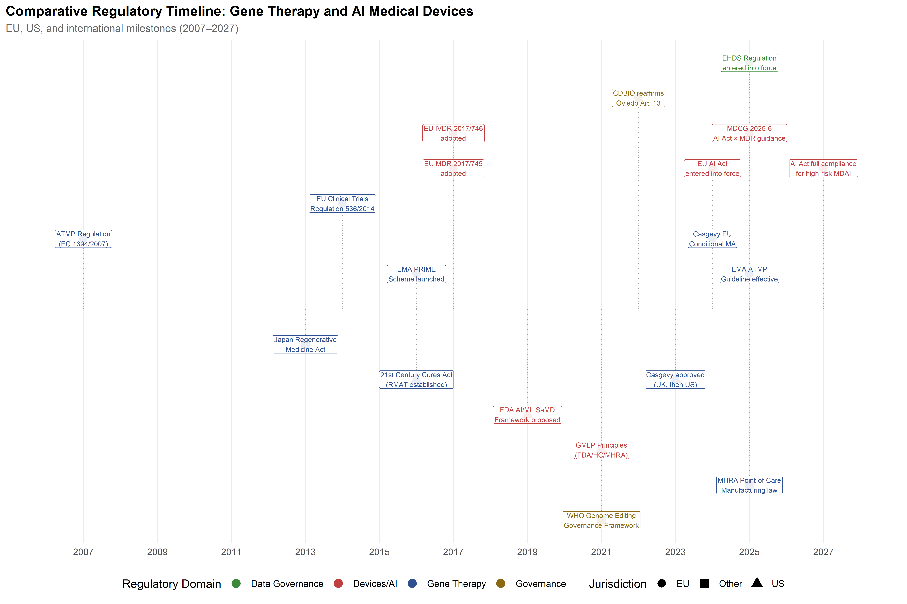
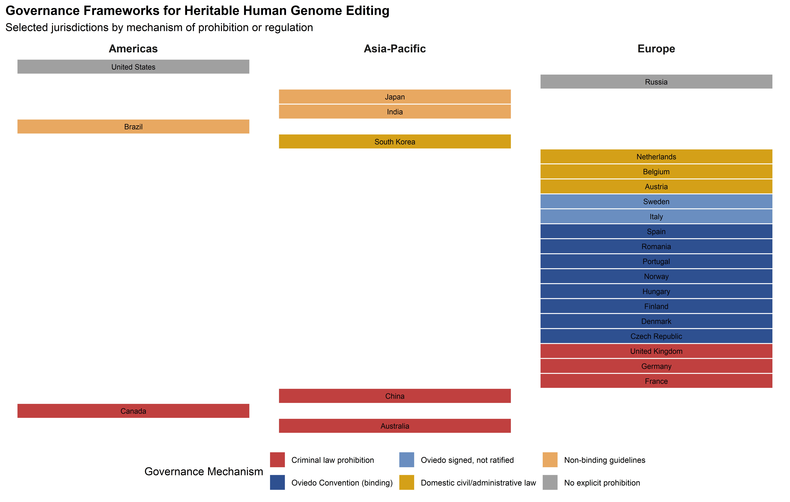
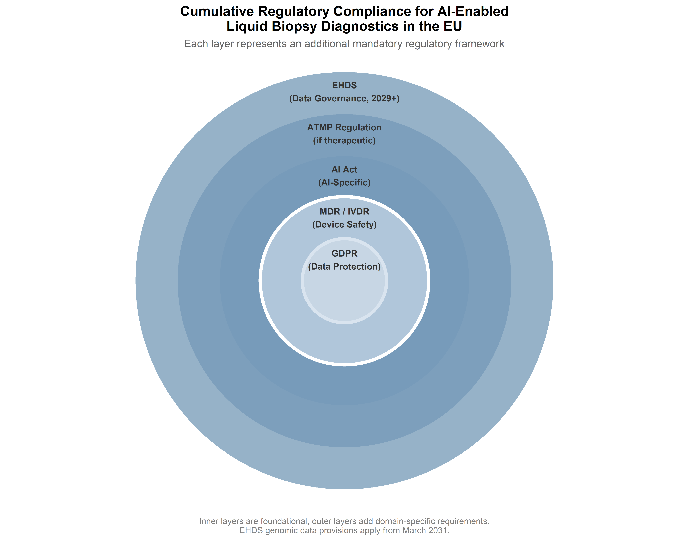

7 Regulatory Frameworks for Gene Editing in Europe and Beyond
7.1 Introduction
When the European Medicines Agency granted conditional marketing authorisation for Casgevy (exagamglogene autotemcel) in early 2024—the first therapy based on CRISPR/Cas9 editing to reach European patients—the decision condensed into a single regulatory act a set of tensions that had been accumulating for over a decade. A technology developed in academic laboratories, refined through AI-assisted design pipelines (Part I), and tested in clinical trials for monogenic blood disorders (Part II) had arrived at the gate of institutional approval, and the frameworks assembled to evaluate it were themselves objects of political negotiation, scientific contestation, and jurisdictional rivalry. Regulation, in this domain, is not an external constraint applied after the science is settled; it is woven into the sociotechnical system from the outset, shaping which therapeutic futures become accessible and to whom the benefits and risks accrue.
The governance challenges exposed by that approval are multiple and entangled. Technological development has outpaced the review capacity of agencies designed for conventional pharmaceuticals. The dual-use character of CRISPR spans from somatic therapies for monogenic diseases—broadly accepted—through heritable germline modifications prohibited under the Oviedo Convention and most national frameworks, to enhancement applications that remain speculative and largely unregulated. Meanwhile, the integration of AI into the development pipeline and into the diagnostic architecture supporting gene editing—visible in the PREDI-LYNCH liquid biopsy platform discussed in Chapter 6—introduces a second, intersecting regulatory domain with its own rapidly evolving framework, most notably the EU AI Act.
The analysis that follows compares European, American, and Asia-Pacific regulatory approaches before turning to the emergent governance frameworks for AI-enabled medical devices, clinical data governance, and the human rights dimensions of heritable genome modification. Throughout, the chapter attends to the ways in which regulatory choices reflect and reproduce broader political commitments about the relationship between technological innovation, human rights, and distributive justice—commitments that an STS-informed analysis renders visible.
7.2 The European ATMP regulatory pathway
7.2.1 Regulation (EC) No 1394/2007 and the Committee for Advanced Therapies
The European Union’s framework for regulating gene therapies operates through the Advanced Therapy Medicinal Products (ATMP) regulation, adopted in 2007 to create a centralized authorization pathway for three categories of products: gene therapy medicinal products (GTMPs), somatic cell therapy medicinal products (sCTMPs), and tissue-engineered products (TEPs) (European Parliament and Council of the European Union, 2007). The regulation established the Committee for Advanced Therapies (CAT) within the European Medicines Agency (EMA) as the specialist body responsible for scientific assessment, classification, and the provision of scientific advice to developers.
The centralized procedure is mandatory for ATMPs. Unlike conventional pharmaceuticals, which may be authorized through decentralized or mutual recognition procedures, ATMPs require a single marketing authorization valid across all EU member states, issued by the European Commission upon a positive opinion from the Committee for Medicinal Products for Human Use (CHMP), informed by the CAT’s assessment. This centralization was a deliberate policy choice, reflecting the judgment that the technical complexity and safety profile of advanced therapies required harmonized expert evaluation rather than fragmented national assessments.
As of the most recent CAT reporting period (November 2025), 27 ATMPs had received marketing authorization in the EU, approximately half of which (52%) received the PRIority MEdicines (PRIME) designation—an EMA support scheme introduced in 2016 to provide early and enhanced scientific engagement for medicines addressing significant unmet medical needs (Alaburde et al., 2025; European Medicines Agency, 2025a). Orphan designation, available for products targeting diseases affecting fewer than five per 10,000 persons in the EU, was associated with a statistically significant reduction in time-to-authorization—an estimated 32.8% shortening of the interval from initial dossier submission to marketing authorization, according to a 2025 retrospective analysis of all EMA-approved ATMPs (Alaburde et al., 2025).
The 32.8% reduction in time-to-authorisation associated with orphan designation is drawn from a retrospective analysis of all EMA-approved ATMPs through November 2025 (Alaburde et al., 2025). The effect is confounded by the likelihood that orphan-designated products also receive PRIME and accelerated assessment, making it difficult to isolate the contribution of any single regulatory pathway.
7.2.2 The 2025 guideline on investigational ATMPs
A major update to the ATMP regulatory framework came into effect on 1 July 2025, when the EMA’s comprehensive Guideline on quality, non-clinical and clinical requirements for investigational ATMPs in clinical trials became operative (European Medicines Agency, 2025b). First adopted by the CAT in December 2018 and undergoing six years of public consultation and revision before its final form was accepted by the CHMP in January 2025, this guideline is now the most detailed primary-source reference for ATMP clinical trial applications in the EU. Its protracted development reflects the genuine difficulty of establishing regulatory standards for a class of products that ranges from autologous cell therapies manufactured at the patient’s bedside to off-the-shelf allogeneic gene-edited products produced at industrial scale.
The guideline’s emphasis on chemistry, manufacturing, and controls (CMC) documentation is particularly relevant for CRISPR-based therapies, where manufacturing consistency intersects with the inherent biological variability of autologous cell products. The guideline mandates compliance with EudraLex Volume 4, Part IV—the EU’s GMP requirements specific to ATMPs—and requires that the manufacturing process be documented in sufficient detail to support reproducibility across different clinical trial sites (European Commission, 2017). For multi-national trials such as those envisaged under the EARLYSCAN cluster (which coordinates PREDI-LYNCH, SHIELD, and DISARM across 16 European countries), this requirement for manufacturing harmonization intersects with the Clinical Trials Regulation (EU) No 536/2014, which established a unified electronic submission and assessment system for clinical trials conducted in more than one member state (European Parliament and Council, 2014).
An important dimension of the 2025 guideline is its alignment with FDA expectations. Regulatory commentators have noted that the CMC sections of the EMA guideline closely parallel FDA guidance on gene therapy manufacturing, reflecting a decade of informal regulatory dialogue through the International Pharmaceutical Regulators Programme (IPRP) and bilateral EMA-FDA interaction. This alignment is not, however, complete: differences persist in donor eligibility determination criteria, GMP compliance expectations for academic manufacturing facilities, and comparability requirements when manufacturing processes change during clinical development. For CRISPR therapies in particular, the question of how to characterize off-target editing profiles—and what constitutes an acceptable off-target event rate—remains an area where EMA and FDA have not yet fully reconciled their evidentiary expectations.
7.2.3 PRIME, orphan designation, and the acceleration architecture
The European regulatory ecosystem has constructed a layered architecture of acceleration mechanisms designed to expedite access to transformative therapies while maintaining safety standards. Beyond the PRIME scheme and orphan designation, developers of ATMPs may access conditional marketing authorization (CMA)—which allows approval on the basis of less comprehensive clinical data than normally required, subject to annual renewal and specific post-authorization obligations—and approval under exceptional circumstances, for products where comprehensive efficacy data cannot be obtained due to the rarity of the condition.
The practical effect of this acceleration architecture is visible in the approval history of CRISPR-based products. Casgevy, the first CRISPR/Cas9-edited cell therapy, received PRIME designation, orphan designation for both sickle cell disease and transfusion-dependent beta thalassemia, and was granted conditional marketing authorization by the EMA in early 2024. Its approval pathway illustrates the cumulative benefit of layered regulatory incentives: PRIME designation provided early access to the EMA rapporteur, a dedicated EMA contact point, and the possibility of accelerated assessment; orphan designation provided ten years of market exclusivity and protocol assistance; and the conditional pathway permitted authorization based on ongoing studies with post-authorization commitments.
However, the acceleration architecture also raises questions about the evidentiary basis for long-term safety. Gene editing therapies introduce permanent modifications to the patient’s genome, and the consequences of off-target effects or insertional events may not manifest for years or decades. The conditional authorization framework, designed for products where the benefit-risk balance is positive despite incomplete data, creates a tension between speed of access and the depth of long-term follow-up. The EMA requires sponsors of conditionally approved gene therapies to conduct post-authorization efficacy and safety studies, including long-term follow-up of at least 15 years, but the enforcement of these commitments has been uneven, and the withdrawal of several ATMPs from the EU market—often for commercial rather than safety reasons—has raised concerns about the sustainability of the post-authorization surveillance model.
7.2.4 The Horizon Europe Mission on Cancer and its regulatory alignment
The regulatory architecture for gene editing in Europe does not operate in isolation from the research policy frameworks that fund and shape clinical development. The Horizon Europe Cluster 1 Health strategic orientation explicitly identifies the need to “unlock the full potential of new tools, technologies and digital solutions for a healthy society,” including advanced therapies, AI applications, and data-driven interventions (European Commission, 2021). The EU Mission on Cancer, one of five Horizon Europe missions, provides a dedicated funding and coordination mechanism for cancer-related R&I, with priority areas that include prevention and early detection of heritable cancers (European Commission, 2024).
The PREDI-LYNCH project operates directly within this mission framework, funded under the call HORIZON-MISS-2024-CANCER-01-03 (“Accessible and affordable tests to advance early detection of heritable cancers in European regions”) (CORDIS, 2025). The EARLYSCAN cluster, which coordinates PREDI-LYNCH with SHIELD and DISARM, was established precisely to ensure that the regulatory requirements for multi-country clinical studies—harmonised endpoints, shared recruitment and attrition reporting, common ethics and GDPR-compliant practices—are addressed collectively rather than duplicated across three parallel projects (ASCO Post Staff, 2026). The cluster’s shared governance model, with dedicated working groups on clinical pathways and on technical data, reuse, and AI, emerged as an institutional response to the regulatory complexity of the ATMP, MDR/IVDR, AI Act, and GDPR frameworks: rather than each consortium navigating these independently, the cluster develops common methodological assets—aligned clinical pathway definitions, minimum endpoint dictionaries, interoperable data practices—that can be shared across projects and, ultimately, contribute to European standards for early detection and surveillance in heritable cancers.
This alignment between research policy and regulatory infrastructure is not automatic. The Horizon Europe strategic orientation emphasises that “managing benefits and risks of new technologies and due consideration of aspects of safety, effectiveness, appropriateness, accessibility, comparative value-added and fiscal sustainability” are crucial for translating innovations into clinical practice (European Commission, 2021). The tension between the Mission on Cancer’s ambition to accelerate translation and the regulatory frameworks’ requirement for rigorous evidence generation is a productive one, but it requires deliberate institutional design—of the kind that EARLYSCAN exemplifies—to prevent it from becoming a bottleneck.
7.2.5 The EU GMO Directive and the genome editing exemption debate
Although the ATMP Regulation governs the therapeutic application of gene editing in humans, the broader European regulatory treatment of genome editing technologies is significantly shaped by a parallel legal framework: Directive 2001/18/EC on the deliberate release of genetically modified organisms (GMOs) into the environment (European Parliament and Council, 2001). While the GMO Directive was designed primarily for agricultural applications, its definitions and regulatory logic have had spillover effects on the governance of gene editing in biomedical research, particularly for ex vivo modification of cells that may involve contained use of genome-edited micro-organisms under Directive 2009/41/EC.
The Directive’s Annex I B exempts from its scope organisms obtained by “mutagenesis” techniques that have a long history of safe use—a provision crafted in the 1990s when mutagenesis referred exclusively to radiation- or chemical-induced random mutations. The emergence of CRISPR/Cas9 and other site-directed nuclease technologies created an interpretive challenge: do organisms produced by directed mutagenesis—which introduce precise, targeted alterations without necessarily inserting foreign DNA—fall within the mutagenesis exemption, or are they subject to the full weight of the GMO authorisation procedure?
This question became the subject of intense scientific, political, and legal contestation throughout the 2010s, with the European Commission’s Group of Chief Scientific Advisors and scientific advisory bodies in several member states arguing that the products of genome editing—where the resulting organism is indistinguishable from one that could arise through natural mutation—should be regulated based on the characteristics of the product rather than the process by which it was made (Scientific Advice Mechanism High Level Group of Scientific Advisors, 2018).
7.2.6 The European Court of Justice mutagenesis ruling (Case C-528/16) and its aftermath
The legal question was resolved—at least in formal terms—by the Court of Justice of the European Union in its landmark judgment of 25 July 2018 in Case C-528/16, Confédération paysanne and Others (Court of Justice of the European Union, 2018; Vives-Vallés & Collonnier, 2020). The Court held that organisms obtained by directed mutagenesis techniques, including CRISPR/Cas9, constitute GMOs within the meaning of Directive 2001/18/EC and are subject to its full requirements—environmental risk assessment, traceability, labelling, and post-market monitoring. The mutagenesis exemption in Annex I B, the Court reasoned, applies only to techniques that have been conventionally used in a number of applications and have a long safety record; directed mutagenesis techniques that emerged after the Directive’s adoption are not covered by this exemption.
The ruling provoked sharp criticism from the scientific community and the biotechnology industry, who argued that it conflated process-based and product-based regulation and would impede European research and agricultural innovation (Wasmer, 2019). The European Commission’s Group of Chief Scientific Advisors issued a statement observing that the ruling created a regulatory regime in which two genetically identical organisms—one produced by CRISPR and the other by conventional random mutagenesis—would be subject to different regulatory requirements, an outcome difficult to justify on scientific grounds (Scientific Advice Mechanism High Level Group of Scientific Advisors, 2018).
The relevance for human gene editing is indirect but significant. The ECJ’s ruling reinforced a process-based regulatory logic in European law: what matters is not only the characteristics of the resulting organism but the technique by which it was produced. This logic resonates with—and arguably reinforces—the Oviedo Convention’s categorical distinction between somatic and germline interventions, which is likewise process-based rather than outcome-based. An STS reading of the ruling reveals a European civic epistemology in which the method of intervention carries normative weight independent of its molecular consequences—a position that contrasts sharply with the product-based approaches now dominant in the United States, Canada, and several Latin American jurisdictions. In 2023, the European Commission proposed a regulation on plants produced by certain new genomic techniques (NGT Regulation) that would have created a two-tier system, exempting from GMO requirements plants with modifications equivalent to those achievable through conventional breeding. The legislative process remained incomplete as of early 2026, illustrating the difficulty of reconciling the Court’s ruling with the scientific consensus on genome editing equivalence.
7.3 The FDA comparative framework
7.3.1 BLA pathway and CBER jurisdiction
In the United States, gene therapies are regulated as biological products under the purview of the Center for Biologics Evaluation and Research (CBER) within the Food and Drug Administration. Authorization is granted through a Biologics License Application (BLA), which requires demonstration of safety, purity, and potency. The regulatory framework draws on a combination of statutory authority (Public Health Service Act, Federal Food, Drug, and Cosmetic Act), regulations (21 CFR Parts 600, 601, and 1271), and guidance documents issued by CBER’s Office of Tissues and Advanced Therapies (OTAT).
The FDA’s approach to CRISPR-based therapies has combined proactive engagement with adaptive regulation. The December 2023 approval of Casgevy for sickle cell disease—marking the first CRISPR/Cas9 therapy authorized anywhere in the United States—was accompanied by a detailed safety assessment that explicitly addressed the risks of off-target editing, including the requirement for genome-wide off-target analysis using unbiased detection methods (U.S. Food and Drug Administration, 2023). The FDA’s advisory committee discussion preceding the approval noted that while no clinically significant off-target events had been detected in treated patients, the relatively small sample size and limited follow-up period meant that rare events could not be excluded.
7.3.2 RMAT designation and the 21st Century Cures Act
The Regenerative Medicine Advanced Therapy (RMAT) designation, established under the 21st Century Cures Act of 2016, is the FDA’s principal mechanism for expediting development of cell therapies, gene therapies, tissue-engineered products, and combination products (U.S. Food and Drug Administration, 2024a). RMAT-designated products benefit from all the features of Breakthrough Therapy designation—intensive FDA guidance, organizational commitment to expedited review, potential rolling review—plus eligibility for accelerated approval based on surrogate or intermediate clinical endpoints and the possibility of fulfilling post-approval requirements through real-world evidence rather than additional randomized controlled trials.
The RMAT pathway has had significant uptake in the CRISPR therapeutic space. CRISPR Therapeutics’ CTX112, an allogeneic CD19-targeting cell therapy, received RMAT designation based on preliminary clinical data in B-cell malignancies. As of late 2025, the FDA had approved approximately three dozen cellular and gene therapy products in total, with the pace of authorizations accelerating notably from 2023 onwards. The agency maintains a public list of AI/ML-enabled medical devices—now encompassing nearly 1,000 cleared devices—though the intersection of AI-enabled diagnostics and gene therapy decision-making (as in the PREDI-LYNCH liquid biopsy pipeline) falls into a regulatory space that neither CBER nor the Center for Devices and Radiological Health (CDRH) has yet fully articulated.
7.3.3 FDA guidance on genome editing and the germline moratorium
The FDA has issued a series of guidance documents that shape the evidentiary expectations for CRISPR-based therapies. The 2022 guidance on Human Gene Therapy Products Incorporating Human Genome Editing addressed the specific risks of nuclease-mediated editing, including requirements for characterising on-target editing efficiency, genome-wide off-target analysis using unbiased methods (such as GUIDE-seq, CIRCLE-seq, or DISCOVER-seq), and the assessment of chromosomal rearrangements at both on-target and off-target sites (U.S. Food and Drug Administration, 2024b). A 2024 draft guidance further elaborated expectations for long-term follow-up of patients receiving genome-edited cell products, recommending 15-year monitoring for therapies involving integrating vectors and risk-proportionate follow-up for non-integrating approaches.
With respect to heritable genome editing, the United States occupies a distinctive regulatory position. There is no federal statute that explicitly prohibits germline editing; instead, the prohibition operates through an annual Congressional appropriations rider (the Consolidated Appropriations Act), which since 2015 has included language prohibiting the FDA from using appropriated funds to review applications for clinical research involving intentional creation or modification of a human embryo to include a heritable genetic modification. This mechanism is a rider, not a statute: it must be renewed annually and applies to the FDA’s review capacity rather than to the research itself. The National Institutes of Health (NIH) Recombinant DNA Advisory Committee (now replaced by the Novel and Exceptional Technology and Research Advisory Committee, NExTRAC) has consistently declined to consider proposals for germline modification in the clinical context.
The effect is functionally equivalent to a prohibition—no clinical trial of heritable genome editing can proceed in the United States without FDA review, which the appropriations rider prevents—but the mechanism is legally distinct from the European approach. Where the Oviedo Convention establishes a binding prohibition grounded in human rights, the US mechanism is budgetary, contingent, and annually renewable. As Lander, Baylis, Zhang, Charpentier, and colleagues argued in their 2019 call for a global moratorium, the absence of a permanent statutory prohibition leaves the US position structurally vulnerable to reversal through a change in Congressional priorities (Lander et al., 2019).
The structural difference is worth underscoring: the Oviedo Convention creates a binding obligation under international human rights law; the US appropriations rider is a budgetary provision that lapses if not renewed. A change of political majority in Congress could, in principle, remove the rider without any legislative process beyond the annual appropriations bill — a vulnerability that no equivalent European mechanism shares.
7.3.4 EMA–FDA convergence and remaining differences
The regulatory alignment between EMA and FDA for gene therapies has been a defining trend of the 2020s. Both agencies now expect genome-wide off-target analysis, long-term follow-up of at least 15 years for integrating gene therapies, and risk-based approaches to non-clinical testing. The EMA-FDA Parallel Scientific Advice procedure, which allows developers to submit a single request for simultaneous scientific advice from both agencies, has been used by several CRISPR therapy developers to harmonize their clinical development programmes.
Nevertheless, substantive differences remain. The FDA’s acceptance of surrogate endpoints for accelerated approval—and its more permissive stance toward real-world evidence for post-marketing commitments—contrasts with the EMA’s traditionally more conservative evidentiary requirements. The conditional marketing authorization pathway in the EU carries annual renewal requirements and explicit post-authorization study obligations, whereas FDA’s accelerated approval is not time-limited but carries confirmatory trial requirements that have historically been enforced with variable stringency. For gene editing specifically, the two agencies differ in their treatment of the hospital exemption (EU) versus point-of-care manufacturing (US/UK), with the EMA permitting non-routine manufacture of ATMPs in hospitals under a member-state-level exemption that bypasses centralized authorization, while the FDA has no direct equivalent—though the UK’s MHRA introduced a dedicated point-of-care manufacturing regulatory framework that became law in July 2025 (Medicines and Healthcare products Regulatory Agency, 2025).
7.4 The Oviedo Convention and the prohibition of heritable genome editing
7.4.1 Article 13 and its normative foundations
The governance of heritable human genome editing in Europe is anchored in a document that predates CRISPR by nearly two decades: the Council of Europe’s Convention for the Protection of Human Rights and Dignity of the Human Being with regard to the Application of Biology and Medicine, adopted in Oviedo, Spain, in 1997 (Council of Europe, 1997). Article 13 of the Convention provides that “an intervention seeking to modify the human genome may only be undertaken for preventive, diagnostic or therapeutic purposes and only if its aim is not to introduce any modification in the genome of any descendants.”
This formulation establishes a two-part test: interventions on the human genome must serve medical purposes (not enhancement), and they must not introduce heritable modifications. The second limb constitutes an absolute prohibition on germline editing for reproductive purposes—a prohibition that is binding under international law for the 29 Council of Europe member states that have ratified the Convention. It is crucial to understand, as Baylis and Ikemoto have emphasised, that the normative foundation of this prohibition is not safety and efficacy—the grounds on which a moratorium might be time-limited and conditional on scientific progress—but human rights and human dignity, with specific reference to the fears of eugenics that motivated the Convention’s drafters (Baylis & Ikemoto, 2017; Council of Europe, 1997).
The Explanatory Report accompanying the Convention explicitly links Article 13 to “the fear of intentional modification of the human genome so as to produce individuals or entire groups endowed with particular characteristics and required qualities.” The prohibition is located within Chapter IV of the Convention, on the Human Genome, alongside provisions addressing genetic discrimination (Article 11) and predictive genetic testing (Article 12). Read in this context, the ban on heritable modification cannot be reduced to a precautionary response to technical uncertainty; it expresses a substantive commitment to the principle that the genetic constitution of future persons should not be predetermined by the choices of prior generations.
7.4.2 The 2022 re-examination and its implications
The development of CRISPR/Cas9 gene editing in the 2010s prompted a formal re-examination of Article 13 by the Council of Europe’s Steering Committee for Human Rights in the fields of Biomedicine and Health (CDBIO). This re-examination, conducted between 2018 and 2022 under the Strategic Action Plan on Human Rights and Technologies (2020–2025), concluded that the conditions were not met for a modification of Article 13’s provisions, but that clarifications were needed on the scope of the terms “preventive, diagnostic and therapeutic” and on the applicability of the prohibition to research contexts (CDBIO, 2022).
The clarifications adopted by CDBIO in 2022 and presented to the Committee of Ministers are significant in several respects. First, they confirmed that Article 13 applies not only to clinical applications but also to the research context: any intervention seeking to modify the human genome must serve medical purposes, even in a purely investigative setting. Second, they specified that gametes, embryos, or their precursors that have been subjected to genome modification interventions “may not be used for the purposes of procreation.” Third, the Parliamentary Assembly of the Council of Europe subsequently urged member states that had not yet ratified the Convention to do so, or at minimum to introduce national bans on establishing a pregnancy with genome-edited germ cells (Parliamentary Assembly of the Council of Europe, 2023).
These clarifications arrived into a contested discursive field. Sykora and Caplan had argued that the Council should not reaffirm the ban, on the grounds that CRISPR’s precision renders the original prohibition—crafted in an era of crude genetic manipulation—obsolete (Sykora & Caplan, 2017). Baylis and Ikemoto responded that the Convention’s normative foundation in human rights and dignity, rather than in safety alone, means that improvements in technical precision do not, by themselves, constitute grounds for lifting the prohibition (Baylis & Ikemoto, 2017). More recently, Feeney and colleagues have described a pattern of “discursive narrowing” in international debates on heritable genome editing, whereby the framing of the issue is progressively reduced to questions of safety and efficacy, depoliticising what is fundamentally a question about intergenerational justice and the social control of human heredity (Martani et al., 2025).
7.4.3 The global policy architecture: a fragmented prohibition
The Oviedo Convention’s prohibition is the only binding international legal instrument addressing heritable genome editing, but it does not cover the entire European governance space, let alone the global one. Germany, the United Kingdom, Austria, Ireland, and several other EU member states have not ratified the Convention—though Germany and the UK prohibit germline modification through domestic legislation (the Embryo Protection Act 1990 and the Human Fertilisation and Embryology Act 1990, respectively) (UK Parliament, 1990). The Netherlands, which had signed the Convention, decided not to ratify it specifically because of the limits it places on embryo research, though it maintains a national prohibition on reproductive germline modification.
Baylis and colleagues’ comprehensive 2020 survey of global policy identified 125 unique policy documents governing human germline and heritable genome editing across 96 countries (Baylis et al., 2020). The majority of countries with relevant policies prohibit or restrict heritable genome editing, but the mechanisms vary enormously—from criminal law sanctions (France, Germany, China’s Article 336 applied to He Jiankui) through civil law prohibitions to non-binding guidelines. Several countries, including Mexico and Japan, present incoherent regulatory situations in which research involving genome editing may be prohibited but implantation of edited embryos is not explicitly addressed (Baylis et al., 2020).
The WHO’s 2021 governance framework and recommendations on human genome editing established a set of principles—including oversight, transparency, responsible stewardship, and equity—but stopped short of recommending a binding international treaty, instead proposing a global registry of genome editing research and a mechanism for reporting potentially irresponsible activities (World Health Organization, 2021a, 2021b). The call by Jasanoff and Hurlbut for a “global observatory” for gene editing—a distributed, multi-sited institution that would monitor developments, facilitate public deliberation, and provide independent assessment—remains unrealised, though its conceptual logic has influenced the design of several national governance initiatives (Hurlbut, 2017; Jasanoff & Hurlbut, 2018).
The Third International Summit on Human Genome Editing (London, 2023) reaffirmed that heritable human genome editing should not proceed to clinical application at this time, citing both outstanding safety questions and the absence of broad societal consensus (Organizing Committee of the Third International Summit on Human Genome Editing, 2023). Yet, as several commentators have noted, the framing of this conclusion—“not yet” rather than “not ever”—implies a conditional moratorium that may be lifted when safety standards are met, rather than a principled prohibition rooted in human rights. The distance between these two stances—conditional moratorium versus principled prohibition—is the central fault line in global governance of heritable genome editing, and it has direct implications for the GRIFOLS-2024 project on synthetic DNA and assisted reproduction and the GRIFOLS-2022 project on artificial gametes, both of which operate at the frontier where germline editing and reproductive technologies converge.
7.4.4 Mitochondrial replacement therapy as precedent
The United Kingdom’s authorisation of mitochondrial replacement therapy (MRT) in 2015 constitutes the only legislative exception to the otherwise universal prohibition on heritable genetic modification in clinical practice. The Human Fertilisation and Embryology (Mitochondrial Donation) Regulations 2015 permit the HFEA to licence procedures—specifically maternal spindle transfer and pronuclear transfer—that replace defective mitochondrial DNA in oocytes or embryos with healthy mitochondrial DNA from a donor, resulting in offspring with genetic material from three individuals (UK Government, 2015).
The regulatory significance of MRT extends beyond its immediate clinical application. Proponents of heritable genome editing have invoked MRT as a precedent demonstrating that the somatic-germline bright line can be crossed when the therapeutic justification is compelling and the regulatory framework is robust. Critics respond that MRT involves the replacement of organellar DNA (which encodes 37 genes and does not contribute to the nuclear genome that determines individual traits), not the modification of nuclear DNA, and that extending the precedent to nuclear genome editing would amount to a qualitative rather than quantitative escalation. The Nuffield Council on Bioethics’ 2018 report on genome editing and human reproduction argued that heritable genome editing could be morally permissible in principle, provided it was consistent with the welfare of the future person and did not increase disadvantage, discrimination, or division in society—but this position was explicitly framed as requiring “broad and inclusive societal debate” rather than unilateral scientific or clinical decision-making (Nuffield Council on Bioethics, 2018).
For the GRIFOLS-2024 project on synthetic DNA and assisted reproduction and the GRIFOLS-2022 project on artificial gametes, MRT provides a concrete regulatory case study of how a technically heritable intervention was brought within a governance framework. The UK’s approach—parliamentary legislation, independent regulatory authority (HFEA), case-by-case licensing, mandatory long-term follow-up, and explicit prohibition on using MRT for non-medical purposes—offers an institutional template, though one that reflects specifically British civic epistemologies about the relationship between expert authority, parliamentary sovereignty, and individual reproductive choice.
7.5 Comparative national frameworks
7.5.1 United Kingdom: post-Brexit regulatory independence
The United Kingdom’s departure from the EU single market has produced a distinct regulatory path for gene editing that combines elements of continuity with deliberate independence. The Medicines and Healthcare products Regulatory Agency (MHRA) continues to apply a framework broadly derived from EU precedents—the UK Medical Devices Regulations 2002, as amended—but has pursued its own initiatives with growing confidence, particularly in the domains of AI-enabled medical devices and point-of-care manufacturing.
The MHRA’s AI Airlock regulatory sandbox, currently in its second phase, takes an explicitly experimental approach to regulating AI-enabled medical devices (including AI-driven diagnostic systems that could support gene therapy decision-making) (Medicines and Healthcare products Regulatory Agency, 2024). By embedding real-world products in a structured evaluation environment involving Approved Bodies, the NHS, and other regulators, the AI Airlock tests the limits of current regulatory frameworks before those limits become binding constraints on innovation. The outputs are intended to inform future MHRA guidance, and the initiative reflects a regulatory philosophy that contrasts with the EU’s more prescriptive AI Act framework—though whether this contrast will produce materially different outcomes for patients or developers remains to be seen.
The UK’s July 2025 point-of-care manufacturing framework is directly relevant to the future of CRISPR-based therapies (Medicines and Healthcare products Regulatory Agency, 2025). Recognising that personalised cell and gene therapies may need to be manufactured in or near clinical settings rather than in centralised facilities, the MHRA developed a regulatory pathway that aims to reconcile the quality assurance requirements of pharmaceutical manufacturing with the logistical realities of autologous cell therapy. The framework permits manufacturing in portable or modular units, subject to regulatory oversight, and offers a pragmatic solution to a challenge that the EMA’s centralized ATMP pathway addresses less directly (through the hospital exemption provision, which delegates authority to member states and has been implemented with significant variability across national jurisdictions).
With respect to heritable genome editing, the UK’s position is governed by the Human Fertilisation and Embryology Act 1990 (as amended 2008), which prohibits placing a genetically modified embryo in a woman and makes such action a criminal offence (UK Parliament, 1990). However, the UK permits licensed research on human embryos up to 14 days of development, and the Human Fertilisation and Embryology Authority (HFEA) has granted research licences for CRISPR-based genome editing of human embryos. This regulatory distinction between research and reproductive application—permitting investigation while prohibiting clinical use—reflects a position that differs from the Oviedo Convention’s 2022 clarification that Article 13’s medical purpose limitation applies to research as well as clinical contexts.
7.5.2 Japan: conditional approval and regenerative medicine
Japan has pursued a distinctive regulatory approach to cell and gene therapies through the Act on the Safety of Regenerative Medicine (2013) and the associated conditional and time-limited approval pathway (Government of Japan, 2013). Under this framework, regenerative medicine products can receive conditional marketing authorization based on early-phase clinical data demonstrating safety and probable efficacy, with a time-limited approval period (typically seven years) during which the sponsor must collect confirmatory efficacy data through post-marketing studies. If confirmatory evidence is not obtained within the specified period, the approval may be revoked (Yoon et al., 2025).
This model was designed to accelerate patient access in a rapidly ageing society with strong political commitment to regenerative medicine as a national strategic priority. It has been both praised for enabling faster access and criticised for potentially diluting evidentiary standards—a tension that mirrors, in a different regulatory culture, the debates surrounding conditional marketing authorization in the EU. For CRISPR-based therapies specifically, Japan’s regulatory framework permits somatic gene editing under the existing pathway but, like most jurisdictions, has not authorized heritable modifications (Government of Japan, 2013).
7.5.3 China: from regulatory vacuum to criminal sanction
China’s regulatory development in genome editing has been decisively shaped by the He Jiankui affair of 2018, in which a researcher created the first gene-edited human babies without ethical approval, transparent oversight, or scientific justification. The episode exposed a governance gap: while China’s ethical guidelines required institutional review of human genetic research, the enforcement mechanisms were inadequate to prevent a determined researcher from circumventing them.
The response was multi-layered. He Jiankui was convicted under Article 336 of the Criminal Law for illegal medical practice and sentenced to three years’ imprisonment (Criminal Law of the People’s Republic of China, Article 336, 2021). Beyond the criminal sanction, China strengthened its Administrative Regulations on Human Genetic Resources Management (revised 2019), tightened institutional review requirements, and drafted new biotechnology regulations that would bring gene editing research under more explicit administrative oversight (State Council of the People’s Republic of China, 2019). However, the regulatory architecture remains complex and partially overlapping, with authority distributed among the National Health Commission, the Ministry of Science and Technology, and the State Council’s legislative office.
China’s regulatory situation is further complicated by its ambitious pursuit of gene therapy as a therapeutic domain. China has authorized several gene therapy clinical trials and has been among the most active countries globally in CRISPR clinical research for somatic applications (particularly in oncology). The regulatory framework for somatic gene therapy is relatively permissive compared to the EU, but the prohibition on heritable editing—reinforced by the He Jiankui prosecution—is now backed by criminal sanctions that are at least as severe as those in European jurisdictions.
7.6 Regulatory science: evidence requirements and their epistemological basis
7.6.1 What counts as sufficient evidence for gene therapy approval?
The question of what constitutes adequate evidence for gene therapy authorisation is epistemological as much as it is technical. Gene editing therapies present regulators with a distinctive evidentiary challenge: they are typically developed for small patient populations (often with orphan designation), administered as one-time treatments with irreversible effects, and evaluated in clinical trials where randomisation against standard of care may be ethically problematic or logistically infeasible. The consequence is that most gene therapy approvals—including Casgevy—have been based on single-arm, open-label studies without concurrent control groups, using historical comparisons or patient-as-own-control designs.
This evidentiary structure creates a fundamental tension. Regulatory agencies require confidence that observed treatment effects are attributable to the therapy rather than to natural disease variability, selection bias, or the Hawthorne effect. Yet the standard tools for establishing causal attribution—randomisation, blinding, concurrent control groups—are often unavailable. The result is a reliance on surrogate endpoints (such as fetal haemoglobin levels for Casgevy) whose relationship to meaningful clinical outcomes may be well-characterised but is not immune to challenge, and on statistical methods for external control comparisons whose assumptions are difficult to verify.
7.6.2 Long-term safety data: how long is long enough?
For gene editing therapies that introduce permanent genomic modifications, the duration of safety follow-up is not a mere administrative detail; it reflects a judgment about the temporal horizon over which the therapy’s risks must be characterised. Both the EMA and FDA recommend 15-year follow-up for gene therapies involving integrating vectors, based on the experience with early retroviral gene therapy trials (notably the X-SCID trials) where insertional oncogenesis manifested years after treatment. For CRISPR-based therapies that do not involve vector integration, the relevant safety concern shifts from insertional mutagenesis to off-target editing events whose oncogenic potential may also require extended observation periods.
The 15-year benchmark is itself a product of regulatory negotiation rather than empirical calibration. No one knows with precision how long it takes for a low-frequency off-target editing event to manifest as a clinically detectable malignancy—the latency period will depend on the genomic location of the off-target edit, the tissue type, the patient’s genetic background, and stochastic factors. The regulatory requirement for extended follow-up thus functions as a pragmatic settlement: long enough to detect most plausible delayed adverse events, short enough to be operationally feasible within the post-authorisation framework. The challenge is that conditional marketing authorisations, by design, grant market access before this follow-up period is complete, and the commercial incentives to maintain patient registries over 15 years are weak—particularly for products that may be commercially withdrawn within a few years of approval, as has occurred with several ATMPs in the EU.
7.6.3 Surrogate endpoints and their epistemic limitations
The reliance on surrogate endpoints in gene therapy regulation warrants explicit epistemological attention. A surrogate endpoint is a biomarker that is expected to predict clinical benefit on the basis of epidemiological, therapeutic, pathophysiological, or other scientific evidence. For Casgevy, the primary surrogate endpoint was the proportion of patients achieving total haemoglobin ≥100 g/L with ≥20% fetal haemoglobin—a biomarker with strong pathophysiological rationale, given that elevated fetal haemoglobin is known to suppress sickling. The FDA and EMA both accepted this surrogate as the basis for approval, though both agencies required confirmatory evidence of clinical outcomes (freedom from vaso-occlusive crises, transfusion independence) as post-authorisation commitments.
The epistemological limitation of surrogates is that they compress a causal chain: the intervention modifies the surrogate, and the surrogate is assumed to track the clinical outcome. When this assumption fails—as it has in other therapeutic domains, notably cardiovascular medicine—regulatory decisions based on surrogates may be invalidated by subsequent outcome data. For gene editing, the additional concern is durability: a surrogate measured at 12 or 24 months may not predict outcomes at 10 or 15 years, particularly if the edited cell population undergoes clonal evolution over time.
7.6.4 The challenge of single-arm gene therapy trials
The predominance of single-arm trial designs in gene therapy development has prompted both agencies to develop guidance on external comparators and historical controls. The EMA’s 2024 reflection paper on the use of registry-based studies as external comparators for single-arm trials in the ATMP context acknowledges the utility of such approaches while emphasising the risks: confounding by indication, differences in supportive care, and the difficulty of matching historical cohorts to contemporary trial populations.
For CRISPR therapies targeting rare genetic conditions, the practical alternative to single-arm designs is often not a randomised trial but no trial at all—the patient population may be too small, or the standard of care too clearly inferior, to justify a concurrent control arm. The regulatory response has been to accept single-arm evidence while imposing more stringent post-authorisation requirements, including mandatory registries, real-world evidence collection, and the possibility of accelerated or conditional approval being revoked if confirmatory evidence fails to materialise. This approach embodies an institutional negotiation between the epistemic ideal of randomised evidence and the practical reality of rare disease drug development—a negotiation whose stakes will grow as gene editing moves from common genetic conditions (sickle cell disease, with ~100,000 patients in the US) to ultra-rare indications (with patient populations in the hundreds or fewer).
7.7 Regulatory science for AI/ML-based medical devices
7.7.1 The EU AI Act and its implications for gene editing diagnostics
The EU Artificial Intelligence Act (Regulation 2024/1689), which entered into force in August 2024 with phased implementation through August 2027, introduces a risk-based classification system for AI systems that has direct implications for the diagnostic and decision-support tools embedded in the gene editing clinical pipeline (European Parliament and Council, 2024). Under the Act’s classification framework, AI systems that are themselves medical devices, or that serve as safety components of medical devices, and that require third-party conformity assessment by a notified body, are automatically classified as “high-risk” AI systems—subject to the Act’s most stringent requirements for data governance, transparency, human oversight, and post-market monitoring.
For the AI-enabled liquid biopsy platforms being developed under PREDI-LYNCH—which use machine learning to identify cancer traces in cell-free DNA of Lynch syndrome patients—the regulatory implications are substantial. These systems will need to satisfy the requirements of three overlapping regulatory frameworks simultaneously: the Medical Device Regulation (MDR) 2017/745 for safety and performance (European Parliament and Council of the European Union, 2017a); the In Vitro Diagnostic Regulation (IVDR) 2017/746 for diagnostic accuracy (European Parliament and Council of the European Union, 2017b); and the AI Act for the AI-specific requirements of data governance, bias mitigation, transparency, and human oversight. The June 2025 guidance document jointly published by the Medical Device Coordination Group and the AI Board (MDCG 2025-6 / AIB 2025-1) clarified that conformity assessment for AI-enabled medical devices should be integrated, requiring a single technical documentation, a single quality management system, and a unified conformity assessment that covers both MDR/IVDR and AI Act requirements (Medical Device Coordination Group, 2025).
The compliance deadline of 2 August 2027 for high-risk AI systems in medical devices means that developers of AI-enabled diagnostics linked to gene therapy decision-making must begin dual compliance preparation immediately. The practical challenge is considerable: while medical device manufacturers already operate under ISO 13485 quality management systems, the AI Act introduces additional requirements—including training data governance, bias monitoring, automatically generated logs, and the ability to provide notified bodies with remote access to datasets and trained models—that are not addressed by existing medical device QMS frameworks (Klontzas et al., 2025).
7.7.2 The FDA’s adaptive framework for AI/ML-SaMD
The FDA has adopted a different architectural approach to AI-enabled medical devices, rooted in its 2019 proposed framework for modifications to AI/ML-based Software as a Medical Device (SaMD) (U.S. Food and Drug Administration, 2019). The centrepiece of this framework is the Predetermined Change Control Plan (PCCP), which permits developers to specify in advance the types of changes an AI/ML device may undergo after authorization—including updates to the algorithm—along with the methodology for verifying and validating those changes. If the PCCP is approved as part of the initial marketing submission, subsequent modifications that fall within its scope can be implemented without requiring a new premarket submission.
This approach reflects a philosophically distinct response to the challenge of adaptive AI systems. Where the EU framework emphasises ex ante conformity assessment (checking compliance before market entry) with post-market monitoring as a supplement, the FDA framework envisions a more continuous regulatory relationship in which the terms of future adaptation are negotiated at the point of initial authorization. For AI systems in the gene therapy pipeline—such as algorithms that refine their cancer detection sensitivity as new training data accrues from Lynch syndrome patient cohorts—the PCCP model offers a pathway to continuous improvement that the EU’s current framework does not easily accommodate.
The joint statement by FDA, Health Canada, and the MHRA on Good Machine Learning Practice (GMLP) principles—published in 2021—provides a set of ten guiding principles for AI/ML medical device development that all three agencies reference, though their implementation within the respective regulatory frameworks differs in important respects (FDA et al., 2021). The principles address the entire AI lifecycle, from data collection and annotation through model development and validation to deployment and monitoring, and they remain the closest existing approximation to an internationally harmonized standard for AI in medicine.
7.8 Clinical data governance: GDPR, the European Health Data Space, and the AI Act
7.8.1 The GDPR as foundational layer
The General Data Protection Regulation (GDPR, Regulation 2016/679) provides the foundational legal framework for the processing of personal data—including health data and genetic data—within the EU (European Parliament and Council of the European Union, 2016). For gene editing clinical trials, the GDPR’s requirements are both enabling and constraining. On the enabling side, the GDPR provides legal bases for processing health data for scientific research purposes (Article 9(2)(j)), subject to appropriate safeguards including data minimisation, pseudonymization, and proportionality. On the constraining side, the regulation’s requirements for informed consent, data subject rights (including the right to erasure), and restrictions on international data transfers create operational challenges for multi-national clinical trials that process genomic data across jurisdictional boundaries.
The practical implications are particularly acute for the PREDI-LYNCH consortium, which processes liquid biopsy data from Lynch syndrome patients across 16 European countries within the EARLYSCAN cluster. The STS Interlude in Chapter 6 identified the concept of “data friction”—the resistances and incompatibilities that emerge when standardised data systems encounter diverse institutional, legal, and technical environments—as a key analytical framework for understanding the challenges of cross-border clinical data sharing. The GDPR’s allowance for member-state derogations in the context of health research means that the legal basis for processing genetic data varies across the consortium’s participating countries, creating a patchwork of national implementations that must be navigated for each data sharing arrangement.
7.8.2 The European Health Data Space: a new infrastructure
The European Health Data Space (EHDS) Regulation (Regulation 2025/327), which entered into force on 26 March 2025, is the most ambitious development in European health data governance since the GDPR itself (European Parliament and Council, 2025). The EHDS establishes a comprehensive framework for the primary use (healthcare delivery) and secondary use (research, innovation, policymaking, regulatory activities) of electronic health data across the EU, supported by two cross-border digital infrastructures: MyHealth@EU for primary use and HealthData@EU for secondary use.
For gene editing research programmes operating under Horizon Europe, the EHDS’s secondary use provisions are transformative. The regulation creates a new regulatory pathway through which “data users” (including researchers) can apply for access to a wide range of electronic health data held by “data holders” (including healthcare providers, clinical trial sponsors, and entities processing health data) for specified permitted purposes, including scientific research and the training of AI algorithms. The access is mediated through national Health Data Access Bodies (HDABs), which evaluate applications, issue data permits, and ensure that data is provided in a secure processing environment.
The EHDS’s implementation timeline is phased: by March 2027, the European Commission must adopt key implementing acts; by March 2029, secondary use rules become applicable for most data categories, including electronic health records; and by March 2031, provisions relating to genomic data and clinical trial data will apply (European Commission, 2025). For PREDI-LYNCH and similar multi-country consortia, the EHDS promises to reduce the data friction that currently characterises cross-border health data sharing—but only if the implementing acts achieve genuine harmonization rather than codifying existing national differences.
The EHDS also intersects with the AI Act in significant ways. The regulation explicitly addresses the interoperability requirements for EHR systems with medical devices and high-risk AI systems, and mandates consultation between the MDCG, the AI Board, and the European Data Protection Board when common specifications affect products regulated under multiple frameworks. For an AI-enabled liquid biopsy system that processes genomic data from a European Health Data Space infrastructure, the compliance requirements span at least four regulatory frameworks simultaneously: the GDPR (data protection), the EHDS (health data access and interoperability), the MDR/IVDR (device safety and diagnostic accuracy), and the AI Act (AI-specific requirements). The cumulative compliance burden is substantial, and it raises the question—addressed in the STS Interlude below—of whether the cost of regulatory compliance is distributed equitably across different types of research actors.

7.9 International regulatory harmonisation
7.9.1 ICH guidelines and their applicability to gene editing
The International Council for Harmonisation of Technical Requirements for Pharmaceuticals for Human Use (ICH) provides the principal framework for converging regulatory expectations across the EU, US, and Japan—its three founding regulatory jurisdictions—with an expanding membership that now includes Health Canada, Swissmedic, and regulatory authorities from Brazil, China, South Korea, and others. ICH guidelines relevant to gene editing span quality (Q5A on viral safety of cell-line-derived products, recently revised as Q5A(R2); Q5D on cell substrates), safety (S6 on preclinical assessment of biotechnology products), and efficacy (E6 on good clinical practice) (International Council for Harmonisation, 2024).
However, ICH’s guideline portfolio was not designed for the specific challenges of gene-edited cell therapies. The existing ICH framework does not address the characterisation of off-target editing, the assessment of edited-cell clonality, or the regulatory treatment of adaptive AI systems embedded in the manufacturing or quality control process. The ICH Gene Therapy Discussion Group, established to explore whether gene therapy-specific guidelines are warranted, has not yet produced formal guidance. The result is that EMA, FDA, and PMDA each supplement the ICH framework with jurisdiction-specific guidance on gene therapy—creating a patchwork in which developers must reconcile overlapping but non-identical requirements for global clinical programmes.
7.9.2 EMA–FDA regulatory interaction and mutual recognition
The EMA and FDA have developed several mechanisms for bilateral regulatory interaction in the gene therapy domain. The EMA-FDA Parallel Scientific Advice procedure allows developers to receive coordinated feedback from both agencies on a single development plan. The EMA-FDA cluster on ATMPs, established under the broader EMA-FDA confidentiality arrangements, facilitates information exchange on regulatory science questions specific to advanced therapies—including the assessment of genome editing off-target effects, manufacturing comparability for autologous cell products, and long-term follow-up requirements.
These mechanisms fall short of mutual recognition, however. The EU and US do not recognise each other’s gene therapy marketing authorisations, and the technical dossier requirements differ in enough respects—particularly in environmental risk assessment, which the EU requires for gene therapy products under Directive 2001/18/EC but the FDA does not—that a single global dossier remains aspirational for most developers. The practical consequence is that global CRISPR therapy programmes must maintain parallel regulatory strategies, with significant cost implications that disproportionately burden academic developers and small biotech companies.
7.9.3 Regulatory harmonisation through cluster approaches
The EARLYSCAN model—in which multiple Horizon Europe projects coordinate their regulatory strategies through shared governance structures—offers a different pathway to harmonisation, working at the level of research programmes rather than regulatory agencies. By developing common endpoint definitions, shared recruitment reporting frameworks, and aligned data practices, the EARLYSCAN cluster aims to ensure that evidence generated across its three constituent projects (PREDI-LYNCH, SHIELD, DISARM) is comparable and ready for regulatory submission across different member states and, potentially, across jurisdictions.
This bottom-up approach complements the top-down efforts of ICH and bilateral agency interactions. Its significance lies in the recognition that regulatory alignment is not only a matter of converging formal guidelines but also of standardising the operational practices—data collection, biobanking, quality management—that determine whether clinical evidence is, in practice, usable across regulatory contexts. The cluster’s first Annual Meeting, planned for May 2026, will formally consolidate the common work plan and begin sharing practical tools with the wider research and policy communities.
7.9.4 Intellectual property and regulatory data protection
The intellectual property terrain for CRISPR-based therapies adds a further layer of complexity to the regulatory framework. The foundational CRISPR/Cas9 patents remain the subject of ongoing disputes between the Broad Institute (which holds US patents based on Feng Zhang’s work) and the University of California / University of Vienna / Emmanuelle Charpentier (who hold European patents based on Doudna and Charpentier’s work). This split patent geography means that the IP framework for a CRISPR therapy may differ between the EU and US markets, with implications for licensing costs, freedom to operate, and ultimately the cost of therapy to patients and health systems.
Regulatory data protection—the period during which a new medicine’s clinical data cannot be relied upon by generic or biosimilar applicants—interacts with patent protection to determine the total period of market exclusivity. In the EU, ATMPs benefit from 8 years of data exclusivity plus 2 years of market protection (extendable by 1 year for new indications); orphan-designated ATMPs receive an additional 10 years of market exclusivity. In the US, biologic products receive 12 years of data exclusivity under the Biologics Price Competition and Innovation Act. For gene therapies priced at $2.2 million per treatment (Casgevy’s list price), the duration and terms of market exclusivity are as much a question of health equity as of commercial strategy: they determine when, if ever, more affordable versions of transformative therapies may become available, and they shape the negotiating position of national health systems seeking to balance innovation incentives against budgetary sustainability.
7.10 STS Interlude VII: regulation as co-production
The PREDI-LYNCH liquid biopsy platform, as described in this monograph’s preceding chapters, must simultaneously satisfy at least four regulatory frameworks: the ATMP Regulation (as an investigational medicinal product), the MDR/IVDR (as a medical device), the AI Act (as an AI system), and the GDPR/EHDS (as a processor of health data). Each framework constructs the same technological object differently—assigning it a different legal identity, subjecting it to different evidentiary requirements, and embedding it in a different institutional logic. This layering is not incidental; it reveals what Jasanoff calls co-production: the simultaneous and mutually constitutive shaping of natural and social orders through practices of knowledge-making and governance (Jasanoff, 2004, 2005).
The co-production lens sharpens the comparison between European and American regulatory architectures. The Oviedo Convention draws a categorical line between somatic and germline interventions—a distinction grounded in the Convention’s normative commitment to the protection of future generations’ genetic constitution. The FDA’s framework, by contrast, treats gene therapies along a continuous spectrum of risk, with regulatory requirements calibrated to the product’s specific safety profile rather than to a categorical distinction between somatic and heritable effects. These different regulatory ontologies produce different therapeutic possibilities: the same CRISPR technology that is permissible as a somatic therapy in the EU becomes illegal the moment its effects extend to the germline, not because the technology has changed, but because the regulatory framework constitutes it differently (Yotova, 2020).
Jasanoff’s concept of “civic epistemologies”—the culturally embedded, institutionally stabilised ways in which different polities assess and validate knowledge claims—helps explain why the EU and US have arrived at different regulatory architectures despite sharing access to the same body of scientific evidence (Jasanoff, 2005). The EU’s precautionary orientation, rooted in the historical experience of technological catastrophes and the normative primacy of human dignity, produces regulatory frameworks that emphasise ex ante assessment, categorical prohibitions, and the institutionalisation of ethical reflection. The US’s regulatory pragmatism, grounded in a tradition of risk-benefit analysis and adaptive management, produces frameworks that are more permissive in principle but rely on intensive post-market surveillance to detect problems that ex ante assessment may miss.
Yet co-production alone does not explain why governance takes the form it does at a particular moment. Collingridge’s dilemma—the observation that technology is easiest to control in its early stages when its impacts are unknown, and hardest to control later when its effects are entrenched—adds a temporal dimension to the analysis (Collingridge, 1980). The current moment, in which heritable CRISPR editing is technically feasible but not yet clinically deployed, constitutes a narrow window for anticipatory governance. The Oviedo Convention’s prohibition can be read as an exercise in early-stage control, establishing a normative framework before the technology’s clinical applications became entrenched. The Responsible Research and Innovation (RRI) framework developed within the EU Horizon programme—emphasising anticipation, reflexivity, inclusion, and responsiveness—provides a conceptual vocabulary for this anticipatory governance, though its practical implementation in the context of rapidly advancing gene editing technologies remains a work in progress (Stilgoe et al., 2013).
The empirical case of PREDI-LYNCH brings both theoretical perspectives into focus. The cumulative compliance cost of satisfying four regulatory frameworks simultaneously is not additive but multiplicative, because each framework imposes requirements that interact with and potentially conflict with the others. This regulatory complexity is not equally distributed: large pharmaceutical companies with dedicated regulatory affairs departments can absorb it more readily than academic consortia or SME biotech companies. The EARLYSCAN cluster’s shared governance model—with dedicated working groups on clinical pathways, data governance, and ethics/GDPR—is an effort to collectivise the compliance burden, but the structural advantage remains with well-resourced commercial actors.
The AUTAI project (PID2022-137953OB-I00) on human autonomy and artificial intelligence contributes a further dimension to this analysis. When AI systems mediate the diagnostic pathway that leads to a gene editing treatment decision—as envisaged in the PREDI-LYNCH pipeline, where machine learning algorithms analyse liquid biopsy data to identify early-stage cancers—the question of patient autonomy acquires new complexities. The patient’s ability to exercise informed consent depends on the interpretability of the AI system’s output, on the availability of alternative diagnostic pathways, and on the regulatory framework’s requirements for human oversight and transparency. The AI Act’s requirement that high-risk AI systems include “appropriate levels of human oversight” is a necessary but not sufficient condition for meaningful patient autonomy; the STS challenge is to ensure that the formal requirements of transparency and oversight translate into substantive capabilities for patients and clinicians to understand, question, and refuse the AI system’s recommendations.

7.11 Chapter summary
The regulatory frameworks governing gene editing and AI-enabled diagnostics in 2026 are defined by a structural paradox: the same technologies that promise the most transformative clinical benefits also impose the most complex compliance requirements, and the burden of that complexity falls unevenly across different types of research actors. The European ATMP architecture—centred on the EMA’s centralized authorization pathway and the layered acceleration mechanisms of PRIME, orphan designation, and conditional marketing authorization—provides a comprehensive if demanding framework for somatic gene editing therapies, and the 2025 guideline on investigational ATMPs has consolidated expectations for clinical trial applications in ways that partially converge with FDA guidance on CMC documentation.
The governance of heritable genome editing, by contrast, remains anchored in the Oviedo Convention’s Article 13 prohibition, reaffirmed in 2022, and supported by a heterogeneous global patchwork of national prohibitions whose mechanisms range from criminal law to non-binding guidelines. The unresolved tension between a principled prohibition grounded in human rights and a conditional moratorium grounded in safety concerns—and the discursive narrowing that recent STS scholarship has documented—sets the normative context for the GRIFOLS-2024 and GRIFOLS-2022 projects, both of which operate at the frontier where germline editing and reproductive technologies converge.
Layered on top of these frameworks, the EU AI Act and the European Health Data Space introduce additional regulatory domains for AI-enabled diagnostics. For multi-country consortia like PREDI-LYNCH and the EARLYSCAN cluster, simultaneous compliance with the GDPR, MDR/IVDR, AI Act, ATMP Regulation, and (from 2029) EHDS provisions creates a cumulative burden that functions as both quality assurance infrastructure and structural barrier—distributing costs in ways that advantage well-resourced commercial actors over academic consortia. An STS analysis reveals regulation as co-production rather than mere constraint: the different regulatory ontologies of the EU and US construct gene editing technologies differently, produce different therapeutic possibilities, and embody different civic epistemologies about the relationship between scientific knowledge, democratic governance, and the protection of human rights. The Collingridge dilemma applies with particular urgency to heritable genome editing, where the current window for anticipatory governance may close as the technology approaches clinical readiness.